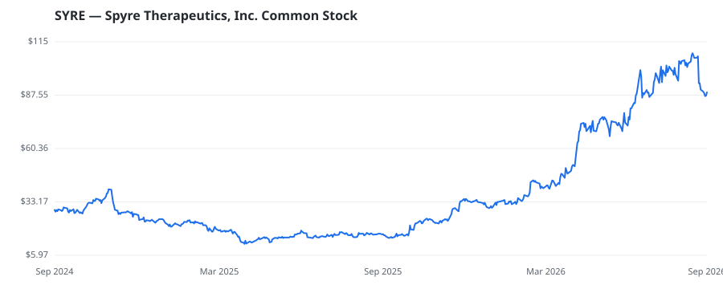

bullish · bearish · n/a — dots: price>SMA10 · SMA10>SMA50 · SMA50>SMA200 · up>down volume (20d)
Pharmaceuticals & Biotech · mid cap

Spyre Therapeutics Inc is a clinical-stage biotechnology company pioneering long-acting antibodies and antibody combinations to redefine the standard of care for inflammatory bowel disease (IBD) and rheumatic diseases. Spyre's pipeline includes extended half-life antibodies targeting α4β7, TL1A, and IL-23 in development as monotherapies and pair-wise combinations. It has a single reportable segment, which is the development of biopharmaceutical products for the treatment of patients with IBD and other immune-mediated disease. PHARMACEUTICAL PREPARATIONS · website
| Revenue | $0 | Net income | $-155.2M |
|---|---|---|---|
| Operating income | $-209.6M | Diluted EPS | — |
| Assets | $777.8M | Equity | $715.2M |
This name produced 0.4% of the ranked funds’ total alpha.
| Fund | Fund alpha vs SPY | Position | % of book |
|---|---|---|---|
| TCG Crossover Management, LLC | +154% | $169M | 4.1% |
Hedge data: SEC EDGAR 13F · ranked funds beat SPY in >50% of their quarters · fund alpha = mirror-portfolio return minus SPY.